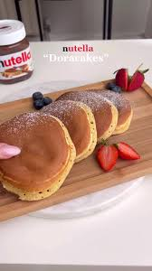

Doracakes

Description
Doracakes stem from a Japanese delicacy known as Doriyaki. Simply put, this is a pancake filled with chocolate spread instead of the sweet azuki bean paste Doriyakis traditionally consist of. These yummy, sweet, fluffly pancakes are quick to make and will easily become your most made recipe.
Ingredients
- 90g flour
- 30g sugar
- 15ml honey
- 10ml water
- vanilla essence
- 2 eggs
- 1/2 tsp baking powder
- 1/2 tsp baking soda
- chocolate spread
Steps
- Freeze small disks of chocolate spread on parchment paper lined baking tray.
- In a bowl, whisk the eggs with honey, sugar, and a drop of vanilla essence.
- Add the flour, baking soda, and baking powder.
- Combine till well mixed, then add the water.
- Let the batter rest for 10 minutes while the pan heats up over low medium heat.
- Scoop some batter onto the pan, place a disk in the middle, then cover the disk with batter.
- Flip over once bubbles start forming and let it cook through.
- Plate your Doracakes and enjoy!